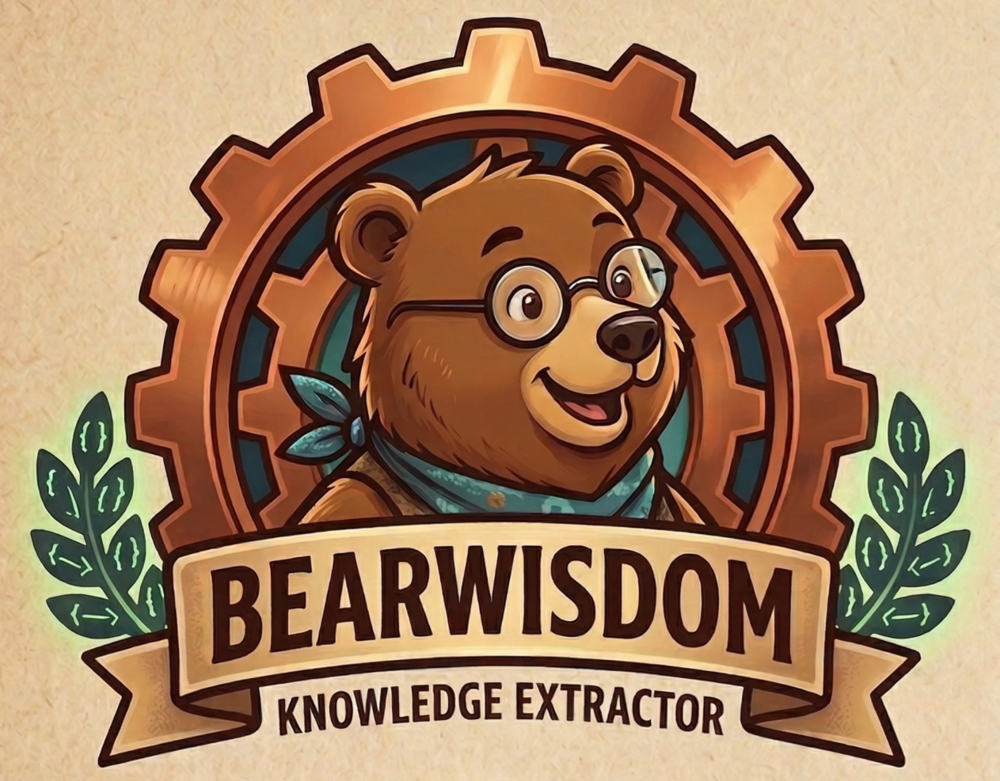
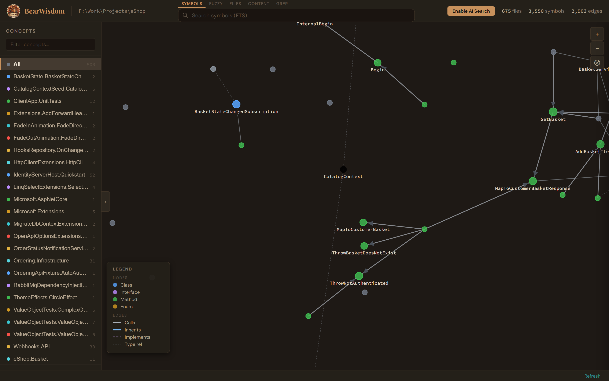
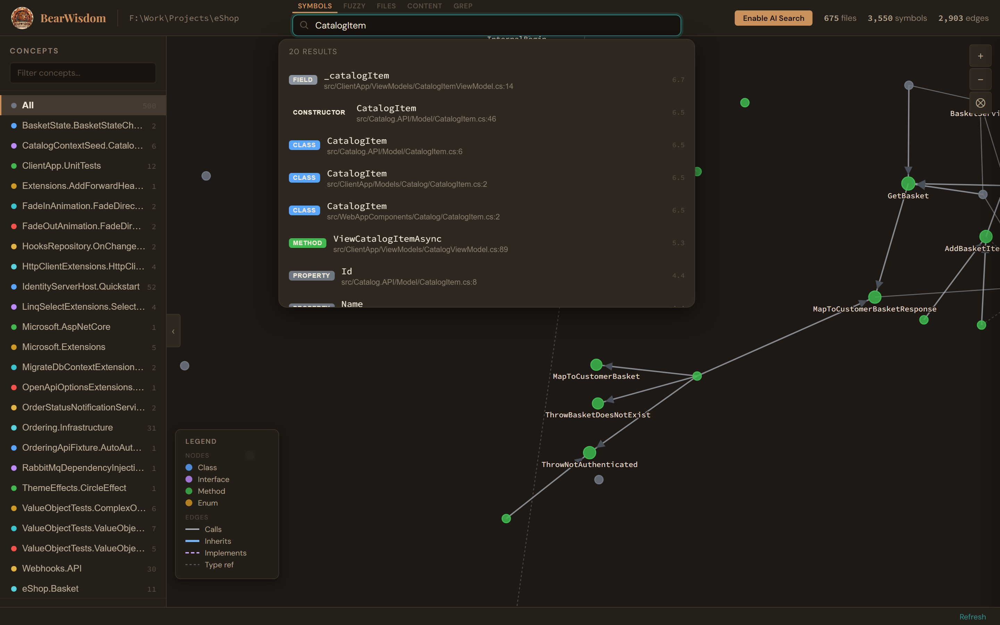
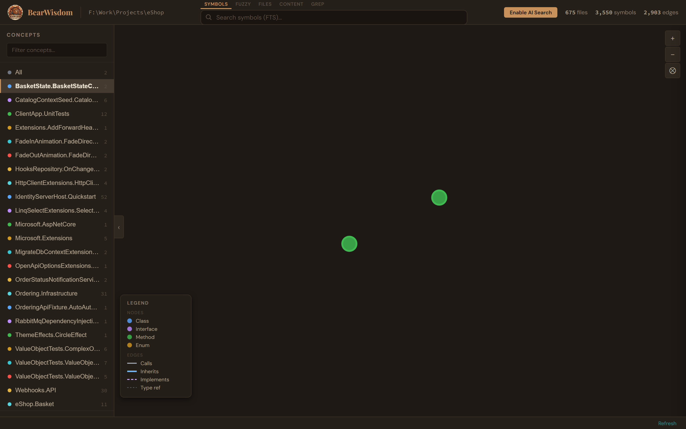

Code Intelligence Engine
31-language structural intelligence for AI-native IDEs. Tree-sitter parsing, knowledge graph, hybrid search.
Core Engine
A structural search engine — not an LLM wrapper. Fast, deterministic, queryable.
Tree-sitter extracts every symbol, reference, and signature. Classes, functions, interfaces, enums — with full qualified names and scope paths.
SQLite database with symbols, edges, and concepts. Call hierarchy, blast radius, cross-file references — all pre-computed and queryable.
FTS5 symbols, fuzzy matching, content trigram, regex grep, hybrid vector + text, and CodeRankEmbed semantic search.
CLI with 30+ JSON commands. MCP server for LLM agents. Web explorer with D3 force graph. Claude Code agent for conversational analysis.
Integrations
BearWisdom isn't an LLM optimization layer. It's a structural search engine that serves both the editor and the AI.
Go-to-definition, find-references, symbol search, file explorer. The same APIs power IDE features and agent queries.
MCP server feeds structural context to any LLM. Blast radius before refactoring. Call chains before debugging. Concepts for onboarding.
Web explorer for visual architecture review. Force-directed knowledge graph. Concept sidebar. Symbol detail with code preview.
Knowledge Graph


Symbol Search
Concept FilteringReal screenshots from the BearWisdom web explorer running on Microsoft's eShop reference architecture.
Switch to the Flow tab to see a Sankey diagram of execution flows — from entry points through services to data stores. Click paths to pin them, hover to explore, and trace from specific symbols.
Flow tab — Sankey diagram showing execution flows across an entire project. Nodes are colored by symbol kind (class, method, interface, constructor).
Tracing from CategoryApiController — shows the full call chain from controller methods through DI-injected services to repository operations.
Command Line
Every query returns structured JSON. Pipe into jq, scripts, or your editor.
Performance
v0.2 benchmarks test three conditions — MCP tools, CLI tools, and native Read/Grep/Glob — across 4 real-world projects spanning .NET, Go, and TypeScript. Composite score combines precision, recall, and efficiency (penalizing tool call count).
| Project | MCP | CLI | Native |
|---|---|---|---|
| eShop (.NET) | 0.456 | 0.626 | 0.404 |
| SimplCommerce (.NET) | 0.627 | 0.574 | 0.433 |
| go-gitea (Go) | 0.294 | 0.414 | 0.302 |
| react-calcom (TS) | 0.534 | 0.549 | 0.380 |
| Project | MCP Tokens | CLI Tokens | Native Tokens |
|---|---|---|---|
| eShop (.NET) | 29,812 | 21,843 | 37,538 |
| SimplCommerce (.NET) | 61,306 | 50,084 | 45,895 |
| go-gitea (Go) | 52,267 | 35,128 | 36,572 |
| react-calcom (TS) | 49,567 | 38,410 | 40,244 |
CLI wins 3 of 4 projects on composite score. Both BearWisdom conditions (MCP and CLI) consistently outperform native tools on graph-heavy tasks — blast radius, call hierarchy, cross-file references. Native tools use 2–4× more tool calls to reach the same answers. CLI's slim JSON output keeps token cost lower than MCP in most cases.
What's Next
Setup
Rust is the only prerequisite. No runtime, no daemon, no config file.
Compile the CLI from source with a single cargo command.
Point BearWisdom at any directory. Index builds in seconds.
Use the CLI, launch the web explorer, or register the MCP server with your IDE.
Internals
A thin set of consumer crates over a single intelligence library.